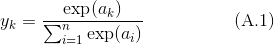
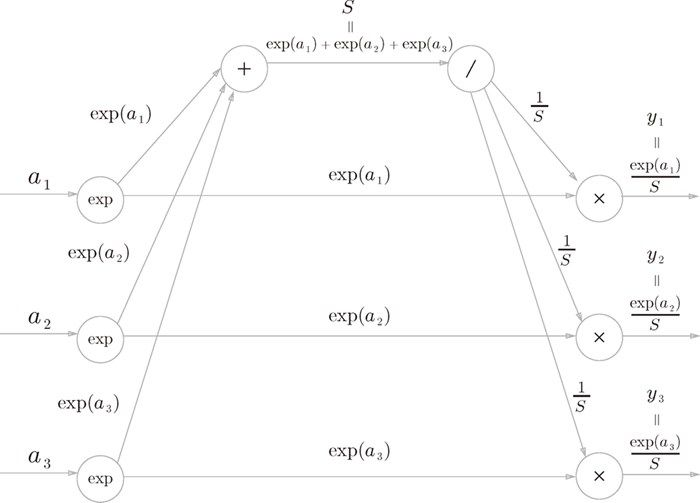
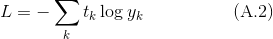
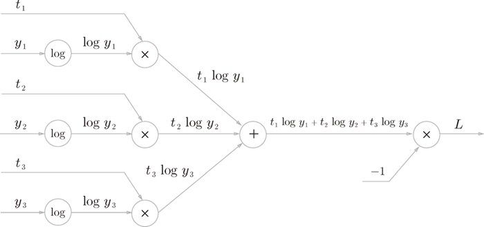

。
。图 A-1 的计算图中省略了 Softmax 层和 Cross Entropy Error 层的内容。这里，我们来画出这两个层的内容。
首先是 Softmax 层。softmax 函数可由下式表示。

因此，用计算图表示 Softmax 层的话，则如图 A-2 所示。

图 A-2 Softmax 层的计算图（仅正向传播）
图 A-2 的计算图中，指数的和（相当于式 (A.1) 的分母）简写为 S，最终的输出记为 。
接下来是 Cross Entropy Error 层。交叉熵误差可由下式表示。

根据式 (A.2)，Cross Entropy Error 层的计算图可以画成图 A-3 那样。
图 A-3 的计算图很直观地表示出了式 (A.2)，所以应该没有特别难的地方。

图 A-3 Cross Entropy Error 层的计算图（仅正向传播）
下一节，我们将看一下反向传播。